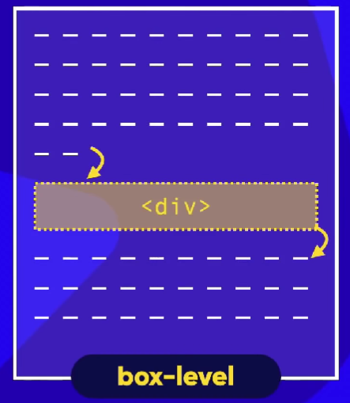
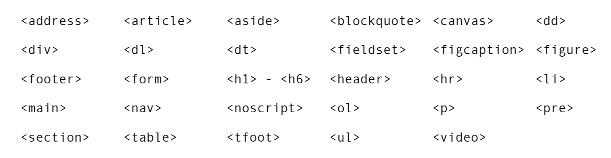
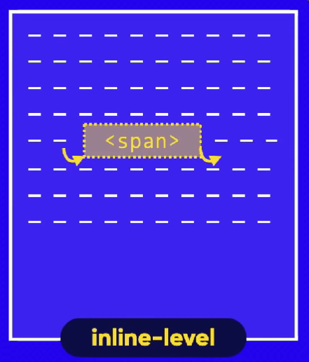
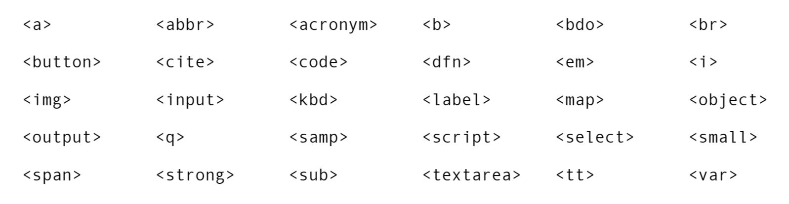

Em HTML, tudo é exibido em caixas. Uma caixa pode estar dentro da outra, isso é o que chamamos de aninhamento.
Esta é a caixa do H1.
Em todas as caixas de conteúdo, podemos traçar uma borda.
A borda fica muito grudada ao conteúdo. Podemos dar uma folga usando o Padding.
Espaço entre a borda e o conteúdo.
Caso eu crie outra caixa, a borda dela vai colar com a borda da primeira caixa. Para que isso não aconteça, ussmaos a Margin.
Dentro da margem, do lado de fora da borda, temos o Outline, que é um contorno da borda.
Um elemento box-level, sempre vai se iniciar em uma nova linha e vai ocupar a largura total do elemento onde ele está contido. Se não estiver contido em nenhuma outra caixa, irá ocupar 100% da largura do <body>.
Tipos de elementos:
Um elemento do tipo inline-level não vai começar em uma nova linha, e sim no ponto exato onde foram definidos. E a largura dele vai ocupar apenas o tamanho relativo ao seu conteúdo.
Tipos de elementos:
Parágrafos também são exemplos de box-level, mas os links são exemplos de caixas inline-level. Vamos ver como tudo isso funciona:
MARGIN AUTO : DEIXA NO MEIO, NAO IMPORTA O TAMANHO DA Tela WIDTH STYLE COLOR : border: 10px solid black PADDING, MARGIN: TOP RIGHT BOTTOM LEFT se o valor de todos os lados forem os mesmos, dá pra colocar só um padding: 10px que ele fica em 10px de todos os lados se colocar 2 valores o TOP e BOTTOM ficam iguais, e RIGHT e LEFT ficam iguais tambem da usar valor + AUTO exemplo: margin: 20px auto 40px auto